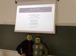

Lectures and Labs




-
1. Biometrics -- Université de Lausanne UNIL (2018)
This course introduces to the analysis, modelling and interpretation of biometric data for biometric person recognition, forensic biometrics, cybersecurity and behavioural biometrics in man-machine communication.
Université de Lausanne -- UNIL (2018) <HERE>
-
2. Fundamentals in Statistical Pattern Recognition -- Ecole Polytechnique Fédérale de Lausanne EPFL (2019)
A set of 8 lectures presenting fundamental tools used in statistical pattern recognition ranging from the most basic (k-NN, Linear Regression, Logistic Regression, PCA, LDA, MLP, K-Means, GMM, HMM and SVM). This course could serve as a pre-requisite for more advanced course on Machine Learning.
This course includes 5 labs (fully documented) on Linear and Logistic Regression (Lab 1), MLP (Lab 2), PCA/LDA+K-Means (Lab 3), GMM/HMM (Lab 4) and SVM (Lab 5).
Ecole Polytechnique Fédérale de Lausanne -- EPFL (2019) <HERE>
-
3. Fundamentals in Statistical Pattern Recognition -- Ecole Polytechnique Fédérale de Lausanne EPFL (2017)
A set of 8 lectures presenting fundamental tools used in statistical pattern recognition ranging from the most basic (k-NN, Linear Regression, Logistic Regression, PCA, LDA, MLP, K-Means, GMM, HMM and SVM). This course could serve as a pre-requisite for more advanced course on Machine Learning.
This course includes 5 labs (fully documented) on Linear and Logistic Regression (Lab 1), MLP (Lab 2), PCA/LDA+K-Means (Lab 3), GMM/HMM (Lab 4) and SVM (Lab 5).
Ecole Polytechnique Fédérale de Lausanne -- EPFL (2017) <HERE>
-
4. Fundamentals in Statistical Pattern Recognition -- Ecole Polytechnique Fédérale de Lausanne EPFL (2015)
A set of 9 lectures presenting fundamental tools used in statistical pattern recognition ranging from the most basic (k-NN, Linear Regression, Logistic Regression, PCA, LDA, MLP, K-Means, GMM, HMM and SVM). This course could serve as a pre-requisite for more advanced course on Machine Learning.
This course includes 5 labs (fully documented) on Linear and Logistic Regression (Lab 1), MLP (Lab 2), PCA/LDA+K-Means (Lab 3), GMM/HMM (Lab 4) and SVM (Lab 5).
Ecole Polytechnique Fédérale de Lausanne -- EPFL (2015) <HERE>
-
5. Fundamentals in Statistical Pattern Recognition -- Ecole Polytechnique Fédérale de Lausanne EPFL (2013)
A set of 9 lectures presenting fundamental tools used in statistical pattern recognition ranging from the most basic (k-NN, Linear Regression, Logistic Regression, PCA, LDA, MLP, K-Means, GMM) to some more elaborated (ISV, JFA, iVectors, PLDA). This course could serve as a pre-requisite for more advanced course on Machine Learning.
This course includes 4 labs (fully documented) on Linear Regression (Lab 1), Logistic Regression (Lab 2), MLP (Lab 3) and PCA/LDA+K-Means+GMM (Lab 4).
Ecole Polytechnique Fédérale de Lausanne -- EPFL (2013) <HERE>
Lectures and Labs
-
1. A tutorial on the BEAT platform (BTAS 2015) <HERE>
-
2. A tutorial on the BEAT platform (FG 2015) <HERE>
-
3. A tutorial on spoofing (ICB 2015) <HERE>
-
4. A tutorial on spoofing (BTAS 2013) <HERE>
-
5. A tutorial on face detection and face recognition (2008) <HERE>
-
6. Artificial Neural Networks (2004) <HERE>
Tutorials
Old Labs
-
1. Spoofing and anti-spoofing
International Master in Biometrics -- University Paris Créteil (2016) -
2.Spoofing and anti-spoofing
Multimedia University -- Malaysia (2015) -
3. Face Processing: from detection to recognition
University of Cagliari (2010) <HERE>
Former Lectures